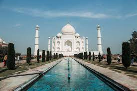

GUIDO
El Taj Mahal
HTML Y CSS
Principal
El Taj Mahal

Considerado como palacio por muchos, el Taj Mahal fue en su origen un mausoleo construido por el emperador musulmán Shah Jahan en honor a la que fue su tercera esposa, Mumtaz Mahal, después de que esta falleciera en el parto de su decimocuarto hijo.